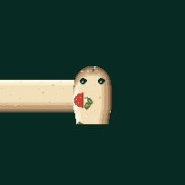
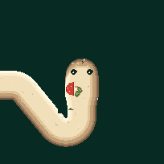
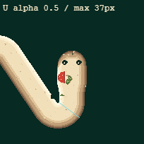
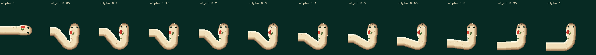

Smooth V2.2 — diagnostic, NOT PASS
Socket gap removed; temporal silhouette and minimum-width gate FAIL.
Playable failed candidate — SMOOTH V2.2 / GRID SNAP · Unchanged accepted V2 · Measurements and limitations
1. Approved V2 — RIGHT→UP alpha .05, native 68 px/cell. 
2. Same turn — bounded cut-and-replace candidate. Unacceptable extra neck bend. 
3. Worst sampled tight-U normal width, native pixels. This does not certify other shapes. 
4. All 12 requested alphas. Native 100%, horizontal scroll — no shrink-to-fit. 